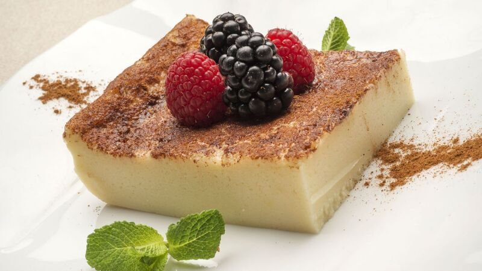
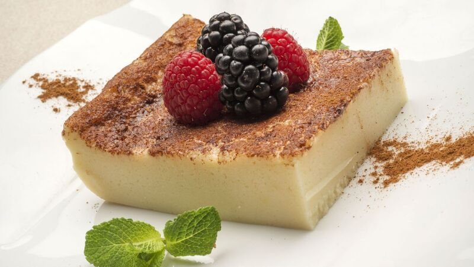

Ke Pasa Tió!


El humor y la comida nos
mantienen vivos. No te olvides de
los alimentos. Puedes pasar una
semana sin reir, pero no una
semana sin comer.
porción de masa hecha de una salsa densa
como la bechamel y un picadillo de diversos ingredientes como el jamon y el queso
 

Este delicioso postre es elaborado en
Cantabria. El secreto del mismo es dejar
cuajar la leche con mantequilla y azúcar.
Solo eso ya nos da una idea de lo
exquisito que puede ser.